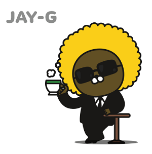
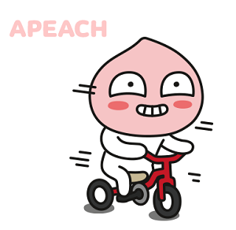
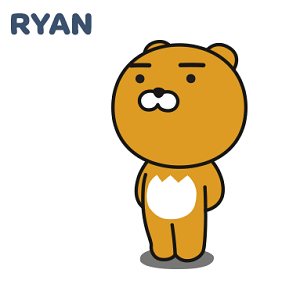
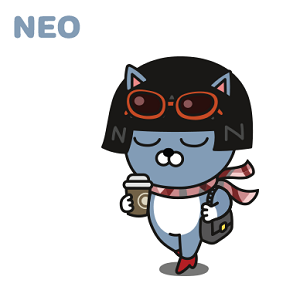
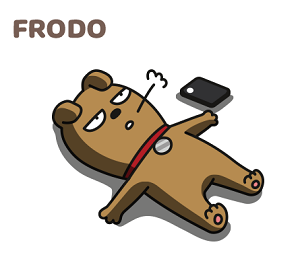
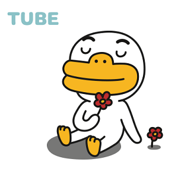

FRIENDS
카카오프렌즈
-

-
YO! 나는 힙합을 좋아하는 비밀요원 두더지 제이지 G
두더지 마을의 비밀요원 제이지. 두더지 마을 장로의 병을 고치는 데 필요한 것은 바로 토끼의 간! 제이지는 고도의 훈련을 받고 토끼의 간을 구하기 위해 Secret Forest로 파견됩니다. 투철한 사명감으로 토끼를 물색하던 중 우연히 만난 무지를 토끼로 착각하여 포획 작전에 돌입합니다. 하지만 무지를 보호하는 콘의 방해로 작전은 매번 실패로 돌아갑니다. 포기하지 않고 무지를 추적하던 중 제이지는 Friends City를 알게 되고, 도시의 신문명을 접한 제이지는 본분을 잊은 채 점차 지상 세계의 매력에 빠져들게 됩니다. 본격적으로 Friends City의 생활을 즐기던 중 우연히 접하게 된 힙합은 제이지의 모든 것을 바꾸게 됩니다.
-

-
카카오프렌즈 최고 잔망꾸러기 복숭아🍑
피치 못할 매력에 빠져봐!
Secret Forest의 복숭아 나무에서 유전자 변이로 태어난 어피치. Secret Forest의 풍부한 햇살을 받아 유독 돋보이는 분홍색을 띱니다. 복숭아 나무에서 탈출한 뒤, Friends City에서 맨 처음 튜브를 만나게 됩니다. 튜브와의 인연으로 Friends City에서 어피치는 다양한 친구들을 만나며 흥미로운 경험을 하게 됩니다. 섹시한 뒤태와 아름다운 분홍빛을 무기로 친구들을 유혹해 보지만, 본능적인 장난기 때문인지 친구들은 항상 어피치를 경계합니다. 그럼에도 아랑곳하지 않고 넘치는 흥을 뿜어내며 오늘도 어피치는 친구들에게 장난을 겁니다.
-

-
머나먼 둥둥섬을 떠나 자유를 찾아온 왕자.
둥둥섬의 왕위 계승자로 태어난 수사자 라이언. 무뚝뚝한 표정과는 다르게 배려심이 많고 따뜻한 리더십을 가지고 있습니다. 하지만 다른 가족들과는 다르게 갈기가 없는 자신의 모습에 정체성의 혼란을 느껴 왕의 자리에 오르기보다는 또 다른 세상에 대한 호기심을 키웁니다. 왕궁에서의 반복되는 일상의 지루함을 느끼던 어느 날, 라이언은 둥둥섬을 탈출하기 위한 준비를 시작하고, 기회를 보던 차에 드디어 둥둥섬 탈출에 성공합니다. 섬을 벗어나 도착한 곳은 책으로만 접하며 동경해 왔던 신비의 장소인 바로 Secret Forest! 그곳에서 라이언은 생각지도 못했던 친구들을 만나며, 흥미로운 이야기들을 만들어 갑니다.
-

-
카카오프렌즈 최고의 패셔니스타.
세상 겁날 것이 없어 보이는 Friends City의 시크한 고양이 네오. 지금의 모습과는 다르게 지우고 싶은 어릴 적 기억들을 가지고 있습니다. 머리 때문에 항상 자신감 없는 학창시절을 보낸 네오. 어느 날 패션 잡지를 통해 알게 된 가발의 세계에 빠져 자신만의 가발을 만들게 되고 트렌드를 선도하게 됩니다. 이후 자신감으로 무장한 네오는 다양한 친구들을 만나게 되고 자는 순간까지도 가발을 내려놓지 않습니다. 오랫동안 네오의 모습을 지켜봐 왔던 프로도의 끊임없는 애정 공세를 지금까지도 받고 있지만, 쉽사리 마음을 주지 않습니다. 항상 주변을 맴도는 프로도를 귀찮아 하면서도 내심 그런 프로도의 모습을 귀여워 하는 네오는 오늘도 프로도의 이벤트를 기대하며 외출 준비를 합니다.
-

-
네오의 영원한 단짝.
부잣집 도시개 프로도를 알고싶다면?
순수하고 어리숙해 보이지만 Friends City의 자산가인 도시 개 프로도. 물려받은 재산 덕분에 항상 부유한 삶을 보내지만 순수 혈통이 아니라는 컴플렉스를 가지고 있습니다. 컴플렉스 때문에 강아지 친구들보다는 다른 친구들과 더 가깝게 지내는 시간이 많습니다. 친구들을 집으로 불러 식사하며 즐기는 것을 좋아해서 주변에 친구들이 많습니다. 하지만 학창시절부터 짝사랑해 오던 네오의 환심을 사기 위해 애꿎은 친구들을 부른다는 사실은 비밀입니다. 항상 네오의 주변을 맴돌며 고백의 기회를 엿보지만 번번이 실패로 끝나고 맙니다. 하지만 포기하지 않고 오늘도 네오와의 새로운 이벤트를 준비합니다.
-

-
프로 소심러들 다 모여~ 소심하지만
귀여운 튜브의 좌충우돌 일상 많.관.부!
발이 작아 소심한 오리 튜브. 겁이 많고 소심한 성격이라 복잡한 도시 생활보다는 Friends City 외곽에서 한적한 전원 생활을 즐기고 있습니다. 발이 작은 컴플렉스 때문에 오리발을 신게 된 이후로 어느덧 오리발 매니아가 된 튜브는 오리발 쇼핑을 위해 종종 Friends City를 방문합니다. 그러던 중 우연히 만난 어피치에게 다른 친구들을 소개하기 위해 Friends City로 여행을 다닙니다.
-

-
안녕 반갑다콘! 나는 Friends City 외곽의
비밀스러운 장소인 Con Lab 살고 있어.
Friends City 외곽의 비밀스러운 장소인 Con Lab에는 나이를 알 수 없는 신비로운 표정의 꼬마 악어 콘이 홀로 연구에 몰두하고 있습니다. 혼자만의 외로운 연구에 지쳐가던 어느 날, 콘은 평생의 동반자로 지낼 친구를 만들기로 결심하고 마침내 무지를 탄생시킵니다. 하지만 귀여워 보이는 토끼의 모습과는 다르게 무지의 정체는 사실 단무지였습니다. 무지를 키우는 데 여념이 없는 콘과는 다르게 커가면서 점차 자아가 강해지는 무지는 바깥 세상에 대한 호기심을 참지 못하고 늘 탈출을 시도합니다. 이를 지켜보던 콘은 결국 다른 친구들과의 만남을 허락하지만, 항상 무지 주변을 맴돌며 관찰합니다.